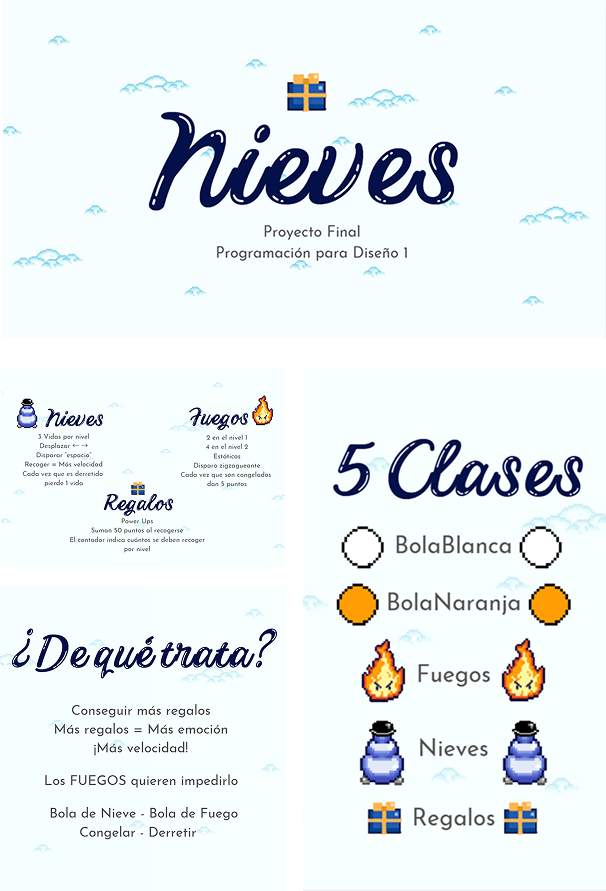
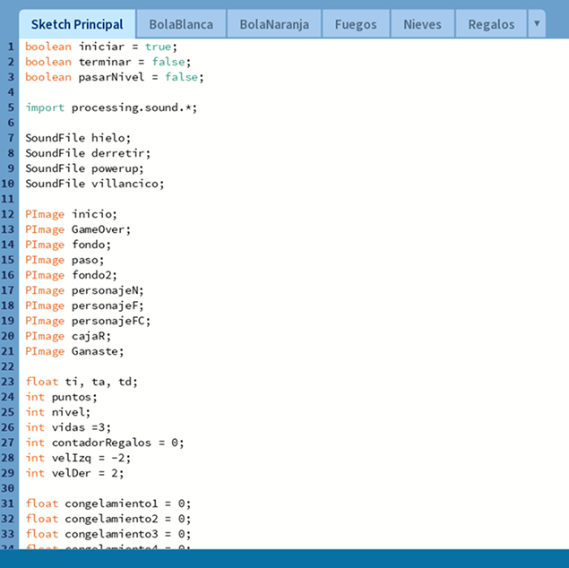

Videojuego tipo arcade creado en Processing utilizando programación orientada a
objetos. El proyecto
integra diseño gráfico, creación de personajes y desarrollo del
código para el jugador, enemigos,
power-ups y dinámicas de juego.
La programación fue desarrollada a partir de cinco clases con variables y
reestricciones construidas
a partir de booleans, private/ public code, vectores,
arrayLists, entre otras.
Además, se integró al juego sonido de acuerdo a su temática.
